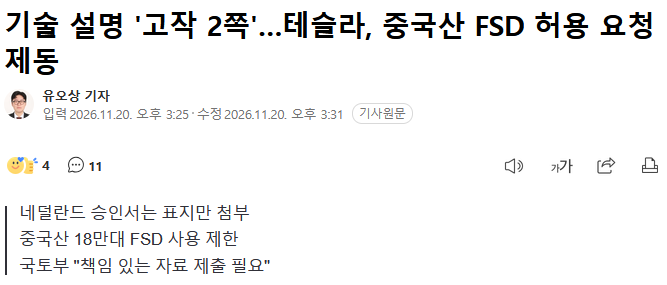
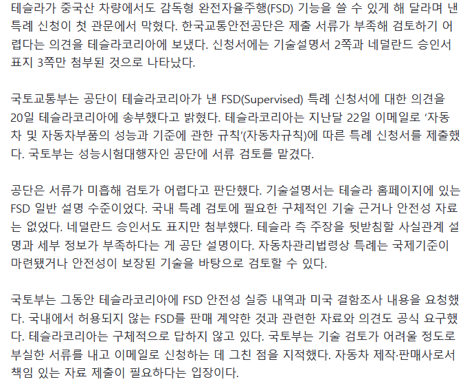

그동안 FSD 안전성 실증 내역과 미국 결함조사 내용 등 추가 자료 제출을 요청했지만
다씹고 지금까지 테슬라가 낸 서류는 기술설명 2쪽과 네덜란드 승인서류 표지만 제출함


그동안 FSD 안전성 실증 내역과 미국 결함조사 내용 등 추가 자료 제출을 요청했지만
다씹고 지금까지 테슬라가 낸 서류는 기술설명 2쪽과 네덜란드 승인서류 표지만 제출함
테슬라는 국제기준에 맞출 생각이 없고
한국은 굳이 테슬라에 예외를 적용해줄 생각도 없고
상황이 이러니 쉽지 않음
테슬라가 완벽한 논리와 보고서를 가져와도
한국에서 현대가 준비되기 전까지는 통과 될리 없다고 생각하는쪽이긴 한데
그래도 테슬라의 저런 태도는 존나 꼴받긴 하네 ㅋㅋㅋ
승인 없어도 잘팔리니까
저정도면 일부러 저러는게 맞네 ㅋㅋㅋㅋㅋㅋㅋㅋㅋㅋ
낼 거는 내놓고 해달라야해야지.. 대충 구색맞춰놓으면 팬들이 알아서 싸워줄거라 생각하는거면 참 괘씸한 일이구먼